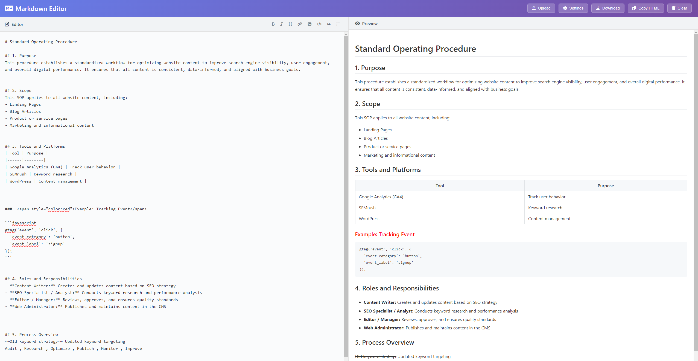
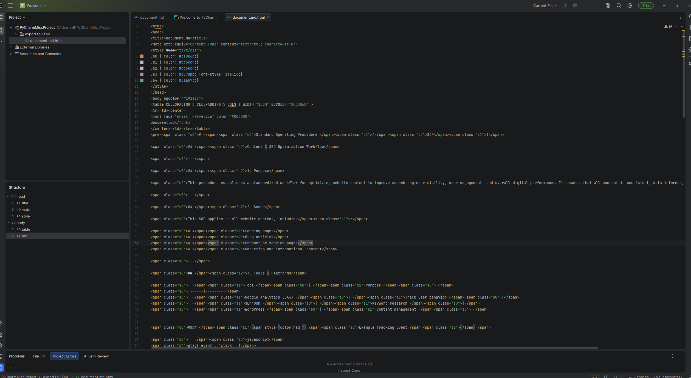

Technical Writing & Documentation Systems
SOP Template: Writing SOPs in Markdown and Exporting to PDF
Designed and documented a repeatable SOP authoring system using Markdown as the source format and a CLI-based PDF export pipeline, reducing formatting overhead and enabling version-controlled procedure documentation.
Responsibilities
Markdown Framework
Defined a Markdown-as-code documentation framework for repeatable SOP authoring.
SOP Template Design
Designed the SOP template structure, required sections, and metadata schema.
PDF Export Pipeline
Built a Pandoc and CSS-based PDF export pipeline for consistent document formatting.
Authoring Guide
Wrote the SOP-on-SOPs guide to teach writers how to use the system.
Example SOPs
Created example SOPs that demonstrated checklist, decision, and handoff procedure formats.
Version Control Workflow
Documented the Git workflow for reviewing, updating, and maintaining procedures.

Overview
Creating a docs-as-code system for SOP documentation
Many teams write SOPs in Word or Google Docs, which can create version control challenges, inconsistent formatting, and high maintenance overhead when procedures change.
This project developed a docs-as-code approach where SOPs are authored in Markdown, stored in a Git repository, and exported to consistently formatted PDF documents through a Pandoc build pipeline.
The final deliverable was both the system itself and the meta-SOP that teaches writers how to use it.
Problem & Goals
Reducing formatting inconsistency and version control issues
The problem was familiar in documentation-heavy teams: multiple people maintaining SOPs in slightly different templates, no audit trail, no diff-based review, and PDFs that looked different every time someone edited a header.
The goal was to create a lightweight, open-source-based system that writers could adopt without specialized tooling.
The system needed to produce print-ready PDFs with consistent formatting while supporting meaningful version history through standard Git workflows.
Improve Consistency
Use a standard Markdown template and CSS stylesheet to control structure and formatting.
Support Version History
Store SOPs in Git to enable review, tracking, and clear documentation history.
Reduce Maintenance
Separate source content from PDF styling to reduce formatting overhead.
Keep It Accessible
Design a workflow writers could use with minimal command-line complexity.

My Role
Designing the full SOP authoring and export system
I designed the full system, including the Markdown template schema, Pandoc export configuration, CSS stylesheet for PDF output, and the authoring guide.
I also wrote three example SOPs using the template to validate the system and demonstrate the range of procedure types it could support.
These examples included a simple two-step checklist, a branching decision procedure, and a multi-role handoff process.
Discovery & Constraints
Choosing a practical documentation pipeline
Research included reviewing existing docs-as-code frameworks, including Divio, Diataxis, and GitBook conventions.
I evaluated three PDF export options: Pandoc, WeasyPrint, and a JavaScript-based solution.
Pandoc was selected for its mature Markdown support, active maintenance, and ability to apply a custom CSS stylesheet for PDF output through wkhtmltopdf.
A key constraint was keeping the authoring experience accessible to writers without a software engineering background, which meant avoiding build-system complexity beyond a single terminal command.
Information Architecture
Structuring SOPs with metadata and repeatable sections
The SOP template uses a YAML front matter block for metadata, including title, version, owner, effective date, review date, and approval chain.
The fixed Markdown section structure includes Purpose, Scope, Definitions, Procedure Steps, Exceptions and Escalations, Related Documents, and Revision History.
The authoring guide is itself written using the template, serving as both documentation and a working example.
The Git workflow section documents branching strategy, pull request review requirements, and an automated PDF export trigger through GitHub Actions.
Requirements & Acceptance Criteria
Supporting compliance-minded documentation practices
The template was designed to meet common regulatory documentation standards, including ISO 9001 procedure documentation requirements and FDA 21 CFR Part 11 audit trail considerations.
Required metadata fields were defined as mandatory front matter keys, and the export pipeline surfaces a validation error if required fields are missing.
Accessibility requirements for PDF output included clear heading structure, consistent list formatting, and sufficient color contrast in the CSS stylesheet.
Required YAML metadata fields for ownership, review, versioning, and approval.
Consistent Markdown sections for repeatable SOP authoring.
Validation support for missing required fields before PDF export.
Analytics & Iteration
Testing the system with first-time Markdown users
The system was tested by asking two writers with no prior Markdown experience to author a new SOP using only the authoring guide as a reference.
Both writers successfully produced a correctly formatted PDF on the first attempt.
Feedback drove two refinements: the Definitions section template was given more explicit placeholder guidance, and the Revision History table format was simplified to reduce entry friction.
Outcomes & Next Steps
Publishing a reusable SOP documentation system
The template system was published as an open repository with an MIT license, including the full authoring guide, three example SOPs, and the Pandoc/CSS export configuration.
The GitHub Actions workflow enables automatic PDF generation on any commit to the main branch.
Next steps include adding a linter check for required front matter fields and developing a companion template for policy documents that share the same structural logic.
Publish reusable SOP template, guide, and example procedures.
Automate PDF generation through GitHub Actions.
Add validation and companion policy templates in future iterations.
Next Steps
Next steps include adding a linter check for required YAML front matter fields, improving validation messaging, and developing a companion policy document template.
Future iterations could also include onboarding documentation for non-technical writers and expanded examples for regulated documentation environments.
Learnings
This project strengthened my ability to design documentation systems that balance structure, usability, automation, and writer accessibility.
I gained experience connecting technical writing practices with docs-as-code workflows, Git-based review, Markdown authoring, and PDF publishing pipelines.